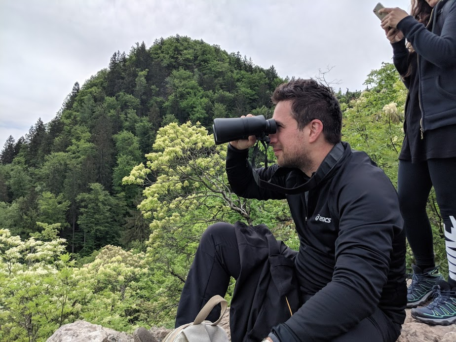
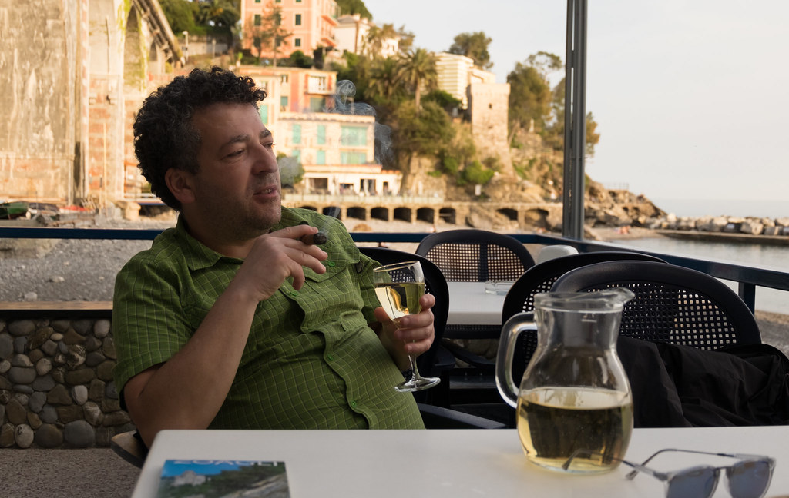
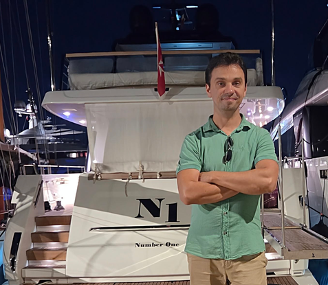

The Team
A team of professionals with high-tech background, passionate about cinematography, technology, and nature.

Mihai Costin
Creative Director
Writes the stories behind the scenarios and directs filming.

Ovidiu Bucur
Producer
In the rare moments when he is not in Lisbon or Biarritz, his favorite cities, you'll find him working on projects in Munich or Maramureș. Responsible for talent recruitment and communication.

Ovi Boc
Commercial Director
Ensures that our ventures and projects remain economically sustainable and profitable.